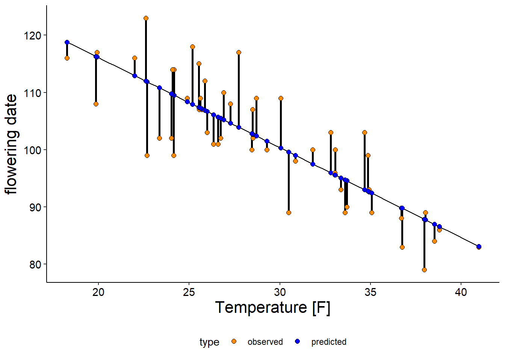

19 Predictive Modeling
Learning Objectives
After completing this tutorial you should be able to
- assess the quality of a linear regression model
- articulate the problems associated with using the same data set to train and test a model
- contrast over- vs underfitting models to the data
Open a new Rmd file using File > New File > R Markdown or the drop down menu of the green plus button below File and save it in your Phenology project directory.
Remember, you should always check your html document after it knits to make sure that everything has converted as expected, including your figures, bullet points etc.
Let’s load our packages so we can get started.
# load libraries
library(tidyverse)
library(janitor)
library(skimr)
library(patchwork)
library(lubridate)
library(tidymodels)
library(knitr)
# turn of sci notation
options(scipen=999)19.1 Model checking
Our analysis of Flowering date in the American Elm shows that mean temperature in March explains a large proportion of variance observed in the flowering date, i.e. we have an expectation of how much earlier the flowering date will occur over every one degree change in temperature based on the linear regression we performed.
Can we predict the flowering date?
Yes, the point of fitting models is that ideally we can model the relationship and then use that model to infer information about our dependent value (flowering date) for values of our independent variable (temperature).
Let’s go ahead and read phenology data back in and extract the American Elm data for Ramsey Co. and then join that to our temperature data.
# mean march temperature
temp <- read_delim("data/MN_temp.txt", delim = "\t", col_names = c("year", "temperature"))
# flowering date w/temp
pheno <- read_delim("data/mnpn_master_dataset_2018.v2.txt", delim = "\t") %>%
clean_names() %>%
filter(species_common_name == "AMERICAN ELM" & event == "FLOWERING" & county == "RAMSEY") %>%
select(year, day_of_year) %>%
left_join(temp)Now, let’s create a linear regression modeling the relationship of the flowering date and temperature for the American Elm. This time we will assign it to an object so we can perform some additional steps.
lm_fit <- linear_reg() %>% # specify model
set_engine("lm") %>% # Define computational engine
fit(day_of_year ~ temperature, data = pheno) # define variablesChoosing lm as our computational engine, means that we are performing an ordinary least square regression. Let’s quickly review what that means for how we are fitting our model.
Figure 19.1: Observed (orange) and corresponding predicted (blue) flowering dates using linear regression model (black line) for American Elm in Ramsey Country.
In this figure you see the observed flowering dates and the corresponding predicted value for each temperature in the data set using the linear regression model. The vertical segments connecting those two points are the residuals, i.e. the distance between the observed and predicted value. When we fit the model, we (and by we I mean R) took the residuals, squared them, summed them all up and then tried to minimize that number - i.e. we tried out all possible configurations of the linear trendline until we found the one that minimizes the sum of the squared regressions.
How do we know how “good” or model is? Well, we can look at the R2 and p-value which tells us how much of the variance in the dependent variable is explained by the independent variable and whether or not that relationship is significant but we should also check our model to determine if a linear regression is an appropriate way to describe the relationship.
One way we can do this is using a diagnostic plot, called a residuals plot which can be used to determine if there is a relationship between predicted values and residuals.
Before we can construct this plot we need to calculate our residuals. We can do this using the function augment()
lm_aug <- augment(lm_fit$fit)
head(lm_aug) %>%
kable()| day_of_year | temperature | .fitted | .resid | .hat | .sigma | .cooksd | .std.resid |
|---|---|---|---|---|---|---|---|
| 101 | 26.60 | 105.70702 | -4.7070184 | 0.0237040 | 6.110531 | 0.0074379 | -0.7827467 |
| 93 | 34.92 | 92.63110 | 0.3688984 | 0.0415946 | 6.148856 | 0.0000832 | 0.0619153 |
| 99 | 22.67 | 111.88350 | -12.8835031 | 0.0465936 | 5.846741 | 0.1148524 | -2.1680089 |
| 118 | 25.19 | 107.92301 | 10.0769910 | 0.0296032 | 5.969197 | 0.0430927 | 1.6808243 |
| 84 | 38.53 | 86.95754 | -2.9575368 | 0.0773935 | 6.133015 | 0.0107358 | -0.5059272 |
| 83 | 40.97 | 83.12277 | -0.1227727 | 0.1112000 | 6.149068 | 0.0000286 | -0.0213977 |
What augmenting does is for every point in our model calculate the fitted value (.fitted) and the residuals (.resid) among other diagnostic variables.
From there we can create the residuals plot.
ggplot(lm_aug, aes(x = .fitted, y = .resid)) +
geom_point(shape = 21, size = 2) +
geom_hline(yintercept = 0, linetype = "dashed", color = "gray") +
labs(x = "predicted value", y = "residual")
When we plot the residuals vs the predicted values we should find a completely random scatter around 0, and no visible patterns among x or y-axis indicating that there is no relationship between the predicted values and the residuals (no clusters, no correlation)110 The fact that the residuals have no pattern to them tells us that all the important variation has already been captured by our model, indicating we chose a good model!.
19.2 Use the model to predict
Let’s say that we had looked at a bunch of climate models predicting mean March temperatures under various emissions scenarios and based off of that information we want to know what the predicted flowering dates would be for 10 - 65F.
First, we need to create a new data set with the values we want to predict flowering date for.
# create data frame with temperature values from 10 - 65F
predict_temp <- expand.grid(temperature = 10:65)
head(predict_temp)## temperature
## 1 10
## 2 11
## 3 12
## 4 13
## 5 14
## 6 15Then we can use the function predict(). This generates a tibble with the predicted flowering dates for each temperature.
pred <- predict(lm_fit, new_data = predict_temp)
head(pred)## # A tibble: 6 x 1
## .pred
## <dbl>
## 1 132.
## 2 130.
## 3 129.
## 4 127.
## 5 126.
## 6 124.We can use the same function to calculate confidence intervals.
pred_CI <- predict(lm_fit, new_data = predict_temp,
type = "conf_int")
head(pred_CI)## # A tibble: 6 x 2
## .pred_lower .pred_upper
## <dbl> <dbl>
## 1 126. 138.
## 2 124. 136.
## 3 123. 134.
## 4 122. 132.
## 5 120. 131.
## 6 119. 129.Because all the outputs are tibbles, we can easily combine them all into a single data.frame using bind_cols():
predict_temp <- predict_temp %>%
bind_cols(pred) %>%
bind_cols(pred_CI)
head(predict_temp)## temperature .pred .pred_lower .pred_upper
## 1 10 131.7960 125.5921 137.9999
## 2 11 130.2244 124.3198 136.1289
## 3 12 128.6527 123.0461 134.2594
## 4 13 127.0811 121.7707 132.3915
## 5 14 125.5095 120.4935 130.5255
## 6 15 123.9379 119.2139 128.6618Now we can plot our predicted values along with the estimated confidence intervals.
ggplot(predict_temp, aes(x = temperature, y = .pred)) +
geom_errorbar(aes(ymin = .pred_lower,
ymax = .pred_upper),
width = .2) +
geom_point(shape = 21, fill = "darkorange", size = 2) +
labs(x = "temperature", y = "predicted flowering date")Not unsurprisingly, our predicted points fall exactly on the calculated trendline, though it is notable that the farther we extrapolate out to temperatures lower or higher than those recorded in our data set our uncertainty increases.
19.3 Do we trust our model?
The process of prediction itself is straightforward. We have the equation for the linear model, so all we have to do (or tell R to do) is to plug the values of the predictor(s) (our independent variable) in to the model equation and the calculate the predicted value for our response (independent) variable.
However, there still are two factors we need to consider that will determine whether or not we can trust our predictions.
- There is no guarantee that the model estimates you have are correct.
- There is no guarantee that the model will perform as well with new data as it did with your sample (observed) data.
Our concern lies in the concept of overfitting vs underfitting.

Comparison of underfit (left), optimal (middle), or overfit (right) model.
In this figure you can see that a linear function is not sufficient to describe the pattern in the observed data111 Think back to us calculating the rate of change for our CO2 and temperature data … where we likely over/under/optimally fitting our data set?. This is described as underfitting, i.e. your model is too simple to capture the pattern and as a result you would expect uncertainties in our predicted values. Likely the model would be more accurate for some values (in this case lower values) while for others (high values) our predicted values would not be very trustworthy.
The panel on the right illustrates what happens when we overfit the model to the data. Here, the model fits the data almost perfectly - which means that it describes the noise not the general pattern in the data.
How can we figure out if we’ve over- or underfit our model? Well, one method is data splitting which means we will be able to cross-validate our model.
19.4 Data splitting
Previously, we used all the data available to use to fit a model and understand how to interpret the data. But if we want to know how good our model is at predicting things we can allocate our data to two different tasks, training/fitting the model and then testing the performance of the model.
Data splitting means that we will take our data set and split it into a training data set that we will use to to fit the model and a test data set that we can use to determine how well our model performs.
The rsample package which is part of the tidymodels network of packages, allows us to randomly subset our data. We will want to have most of our data in the training data set (more data generally means better model) and then keep a small number of observations for testing.
Because we are randomly sub-setting our data set we need to set our initial seed number which means that every time we run the analysis the same set of random numbers will be generated112 It is still considered a random subset, even though we get the same random subset every time. We are essentially giving the random draw the starting point to make it reproducible, i.e. anyone who runs the analysis gets the same training and test data set and therefore the same results as us..
# set random seed
set.seed(42)
# assign 3/4 of data to training set
data_split <- initial_split(pheno, prop = 3/4)
# create two separate data frames
train_data <- training(data_split)
test_data <- testing(data_split)If we look at the dimensions of the two subset we just created we see that they have the same number of observations but they differ in the number of rows roughly at a ratio of 4:1.
dim(train_data)## [1] 38 3dim(test_data)## [1] 13 319.5 Evaluating models
Our first step is fitting the model using our training data set. This looks exactly like when we fit the model using all of our data except now we will specify train_data as the data frame containing the observations.
lm_fit <- linear_reg() %>%
set_engine("lm") %>%
fit(day_of_year ~ temperature, data = train_data)
tidy(lm_fit) %>%
kable()| term | estimate | std.error | statistic | p.value |
|---|---|---|---|---|
| (Intercept) | 145.061292 | 5.5356904 | 26.204733 | 0 |
| temperature | -1.518128 | 0.1863277 | -8.147625 | 0 |
Now we need to use our model to predict values for our training data and the combine that output with our test_data that also contains the observed flowering dates.
flowering_pred <- predict(lm_fit, test_data) %>%
bind_cols(test_data) %>%
select(year, temperature, day_of_year, .pred)Let’s take a look at how well our model performs by comparing the observed and predicted flowering dates
flowering_pred %>%
arrange(desc(.pred)) %>%
kable()| year | temperature | day_of_year | .pred |
|---|---|---|---|
| 1975 | 22.00 | 116 | 111.66247 |
| 1970 | 24.09 | 114 | 108.48958 |
| 1956 | 24.17 | 114 | 108.36813 |
| 1962 | 25.86 | 112 | 105.80249 |
| 1954 | 26.73 | 102 | 104.48172 |
| 1982 | 27.27 | 108 | 103.66193 |
| 1974 | 28.50 | 107 | 101.79463 |
| 1949 | 28.51 | 102 | 101.77945 |
| 1957 | 28.71 | 109 | 101.47583 |
| 1961 | 32.81 | 103 | 95.25150 |
| 1983 | 33.06 | 100 | 94.87197 |
| 1963 | 33.69 | 90 | 93.91555 |
| 1946 | 40.97 | 83 | 82.86357 |
Let’s make a plot that will allow us to compare the predicted vs observed values.
ggplot(flowering_pred, aes(x = day_of_year, y = .pred)) +
geom_smooth(method = "lm", color = "darkred") +
geom_abline(slope = 1, linetype = "dashed", color = "black", size = 1) +
geom_point(shape = 21, fill = "darkorange", size = 3) +
labs(x = "observed flowering date", y = "predicted flowering date")Figure 19.2: Comparison of predicted vs. observed flowering date for training data set. The dashed black line indicates perfect predictions, the red line is the linear trendline showing relationship of observed vs predicted values.

If we had “perfect” predictions, our linear trendline should fall on top of the dashed line indicating perfect predictions.
One way we can quantify this is calculating the root-mean-square deviation (RMSE) which is the standard deviation of the residuals, i.e. the prediction errors. We can calculate this using the package yardstick which contains functions to assess model performance.
rmse(flowering_pred,
truth = day_of_year,
estimate = .pred) %>%
kable()| .metric | .estimator | .estimate |
|---|---|---|
| rmse | standard | 5.036233 |
In general, a smaller RMSE indicates a better model fit but on it’s own the number does not really tell us much.
Let’s compare that to the RMSE for our training data:
lm_aug <- augment(lm_fit$fit)
rmse(lm_aug,
truth = day_of_year,
estimate = .fitted) %>%
kable()| .metric | .estimator | .estimate |
|---|---|---|
| rmse | standard | 6.346058 |
By comparing these two values we can see that our model performs similarly well for the training data set used to make the model and also for the test data set that was not used to make the model.
The fact that the observation were not used to inform the initial model, means that our comparison of the observed vs fitted values are not biased.
If the model was overfit (i.e. it modeled the noise not the overall pattern) we would expect our model to perform poorly in terms of predictions for observations that were not included in the initial data set used to fit the model.
There are some additional processes that go into optimizing models but we’ll hold it here for now.
Page built: 2021-11-30 using R version 4.0.2 (2020-06-22)